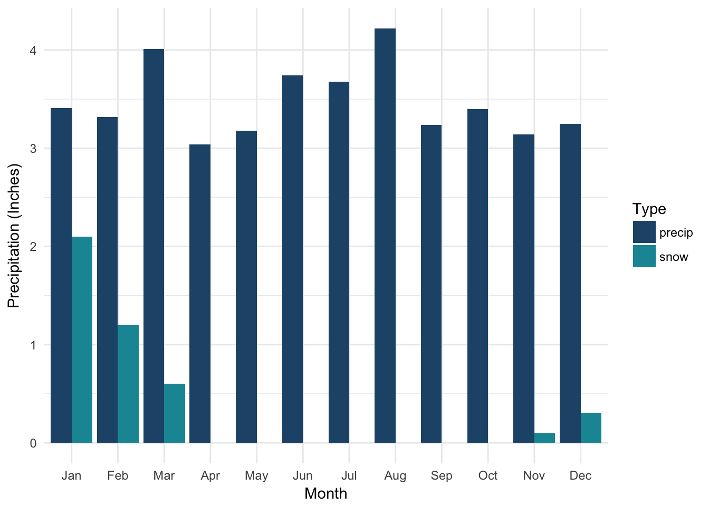

“Some place warm… a little place called Aspen”
Anyone dreaming of moving or travelling has probably thought about how different the weather is in an exotic location compared to your current home. One of the quickest resources for this comparison is Wikipedia. On the page for most every city there is a handy climate table that summarizes average temperatures, precipitation, sunlight, and extremes in weather. I often found myself with two or more of these pages open and going back and forth comparing the data. That’s when I had an idea: why not crate an app that let’s me compare the climate of two cities side by side.
When I first started to work on this project, I went looking for official weather data from resources such as the NOAA. However, this turned out to be more complicated than I initially thought and would have required downloading enormous amounts of data from many data sources.
That’s when I thought: if Wikipedia has already done this work for me, then why not use it? So I decided to simply scrape the data from Wikipedia (note: not every climate table has every data variable we will end up plotting). With this idea in mind, the process eventually took the following shape:
Ultimately we will be graphing 4 items:
library(tidyverse) #for everything
library(stringr) #for str_detect
library(rvest) #for web scraping
library(XML) #for web
library(measurements) #for converting coords
setwd("~/github/weather")The first step is to get a list of cities, their latitude and longitude, and link to their Wikipedia page.
We will be getting links to cities from three resources:
html_table)After specifying the url for the table we want, we use the html_nodes from rvest to traverse the tables looking for the links we need to extract. The td:nth-child(3) a part specifies the column of the cities (here it is the 3rd column).
The ggplot for maps requires a degree decimal format, so we need to convert from the degree-minute-second format to the degree decimal format for two of the tables. The easiest way is to use the measurements library function conv_unit. I noticed, however that this doesn’t always work, so for one of the tables we do it manually using the following formula,
Decimal Degrees = Degrees + Minutes/60
# inspired by
# https://dataorchid.wordpress.com/2015/06/14/web-scrapping-using-rvest-package-of-r/
#url for cities by latitude
url <- "https://en.wikipedia.org/wiki/List_of_population_centers_by_latitude"
# traverse the table for the city links
raw_links <- read_html(url) %>%
html_node("table") %>%
html_nodes("tr") %>%
html_nodes("td:nth-child(3) a") %>% #just the city column
html_attr("href")
# format as a wikipedia link
wiki_links <- as.data.frame(raw_links) %>%
distinct(raw_links) %>% #keep unique links
mutate(link = paste("https://en.wikipedia.org",raw_links,sep="")) %>% #combine to make wikipedia url
mutate(wiki_city = substr(raw_links, 7, 100)) %>% #get the name of the city from the end of the url
select(wiki_city, link)
# format table and coordinates
cities_lat <- read_html(url) %>%
html_node("table") %>%
html_table() %>% # extract text from the city tables
cbind(wiki_links) %>% # combine with the links
mutate(location = paste(City, `Province/State`, Country, sep = ", ")) %>% # create the location name
rename(lat = Latitude, lon = Longitude) %>%
filter(location!="Ålesund") %>% # remove because lat/lon is in wrong format
mutate(x = lat,
y = lon,
lat = trimws(gsub('[^0-9]',' ',lat)),
lon = trimws(gsub('[^0-9]',' ',lon))) %>%
separate(lat, c("lat_deg","lat_min")) %>%
separate(lon, c("lon_deg","lon_min")) %>%
mutate(lat = as.numeric(lat_deg) + as.numeric(lat_min)/60,
lon = as.numeric(lon_deg) + as.numeric(lon_min)/60,
lat = case_when(str_detect(x,"S")==TRUE ~ lat*-1, TRUE ~ lat),
lon = case_when(str_detect(y,"W")==TRUE ~ lon*-1, TRUE ~ lon)) %>% # convert lat/lon from DMS to degrees
select(location, lat, lon, link) %>%
mutate(location = gsub("N/A, ", "", location))#url for us capital
url1 <- "https://en.wikipedia.org/wiki/List_of_capitals_in_the_United_States"
#url of coordinates
url2 <- "https://www.jetpunk.com/data/countries/united-states/state-capitals-list"
#get city links
raw_links <- read_html(url1) %>%
html_node("table") %>%
html_nodes("tr") %>%
html_nodes("td:nth-child(4) a") %>% #just the city column
html_attr("href")
# generate wikipedia links
wiki_links <- as.data.frame(raw_links) %>%
distinct(raw_links) %>%
mutate(link = paste("https://en.wikipedia.org",raw_links,sep="")) %>%
mutate(wiki_city = substr(raw_links, 7, 100)) %>%
select(wiki_city, link)
# get list of us capital coordinates
us_capitals <- read_html(url2) %>%
html_node("table") %>%
html_table() %>%
cbind(wiki_links)
us_capitals$country <- "United States"
# combine coordinates and us capital names and links
us_capitals %<>% mutate(location = paste(Capital, State, country, sep = ", ")) %>%
rename(lat = Latitude, lon = Longitude) %>%
select(location, lat, lon, link)#url for world capital
url <- "https://en.wikipedia.org/wiki/List_of_capital_cities_by_elevation"
#url for the coordinates
url2 <- "http://www.lab.lmnixon.org/4th/worldcapitals.html"
# get the wikipedia links to the cities
raw_links <- read_html(url) %>%
html_node("table") %>%
html_nodes("tr") %>%
html_nodes("td:nth-child(2) a") %>% #just the city column
html_attr("href")
# format the links
wiki_links <- as.data.frame(raw_links) %>%
distinct(raw_links) %>%
mutate(link = paste("https://en.wikipedia.org",raw_links,sep="")) %>%
mutate(wiki_city = substr(raw_links, 7, 100)) %>%
select(wiki_city, link)
city_table0 <- read_html(url) %>%
html_node("table") %>%
html_table() %>%
inner_join(wiki_links, by = c("Capital" = "wiki_city"))
#add coordinates
world_capitals <- read_html(url2) %>%
html_node("table") %>%
html_table(header = TRUE) %>%
inner_join(city_table0, by = c("Country" = "Country")) %>%
select(Country, Capital.x, Latitude, Longitude, link) %>%
rename(City = Capital.x) %>%
mutate(City = gsub('([A-z]+) .*', '\\1', City)) %>% #use first word in city name as that city's name
rename(lat = Latitude, lon = Longitude) %>%
mutate(x = lat,
y = lon,
lat = trimws(gsub('[^0-9]',' ',lat)),
lon = trimws(gsub('[^0-9]',' ',lon)),
lat = conv_unit(lat, from = 'deg_dec_min', to = 'dec_deg'),
lon = conv_unit(lon, from = 'deg_dec_min', to = 'dec_deg'),
lat = as.numeric(lat),
lon = as.numeric(lon),
lat = case_when(str_detect(x,"S")==TRUE ~ lat*-1, TRUE ~ lat),
lon = case_when(str_detect(y,"W")==TRUE ~ lon*-1, TRUE ~ lon)) %>%
mutate(location = paste(City, Country, sep = ", ")) %>%
select(location, lat, lon, link) city_tables <- rbind(cities_lat, us_capitals, world_capitals) %>% distinct(location, .keep_all = TRUE)
write_csv(city_tables, "city_tables.csv")I used Python (specifically pandas) to scrape the individual data tables. Why not use R? Because pandas has a function read_html that allows you to read a specific table based on matching text. Maybe rvest has this somewhere but I couldn’t find it.
I used the regular expression [Rr]ecord [Hh]igh to find the climate table. This matches the phrase “record high” regardless of capitalization.
# load pandas
import pandas as pd
#get good links from r
city_links = pd.read_csv("city_tables.csv")
city_links.head()
#define empty dataframe
climate_columns = ['Month', 'Jan', 'Feb', 'Mar', 'Apr', 'May', 'Jun', 'Jul', 'Aug', 'Sep', 'Oct', 'Nov', 'Dec', 'Year','location','lat','lon']
climate_tables = pd.DataFrame(columns = climate_columns)
#go through every link, read the table in,
for x in range(0,len(city_links)):
try:
df = pd.read_html(city_links.loc[x,"link"], match="[Rr]ecord [Hh]igh", encoding = 'str', header = 1)[0].dropna(axis=0, how='any')
if list(df)[0]=="Month":
df['location'] = city_links.loc[x,"location"]
df['lat'] = city_links.loc[x,"lat"]
df['lon'] = city_links.loc[x,"lon"]
climate_tables = climate_tables.append(df, ignore_index=True)
except:
pass
#write to csv
climate_tables.to_csv("climate_tables.csv")
Now that we have the table, it’s time to clean the data.
The climate tables specify data in metric and imperial using the format Metric (Imperial) or Imperial (Metric). However, the order of the reporting varies based on the standard of that location. In the US, Fahrenheit comes first while in the UK Celsius comes first. The same is true for mm/cm and inches. To appropriately convert everything to imperial, we use str_detect to detect the order and then convert appropriately.
climate_table <- read_csv("climate_tables.csv") %>% distinct(location, Month, .keep_all = TRUE)
climate_data <- climate_table %>%
select(-X1, -Year) %>%
gather(data_key, data_value, -location, -Month, -lat, -lon) %>%
rename(month = data_key,
data_key = Month) %>%
mutate(z = gsub("\\s*\\([^\\)]+\\)", "", data_value)) %>% #remove everything in parentheses
mutate(z = as.numeric(as.character(gsub("−", "-", z)))) %>% #replace wrong minus sign
mutate(y = case_when(str_detect(data_key,"F\\)") == TRUE ~ z*1.8+32,
str_detect(data_key,"mm \\(inches\\)") == TRUE ~ z*.0393701,
str_detect(data_key,"cm \\(inches\\)") == TRUE ~ z*.393701,
TRUE ~ z)) %>%
mutate(y = round(y,4)) %>%
mutate(data_value = y) %>%
select(-z,-y) %>%
mutate(data_key = tolower(data_key)) %>%
filter(!str_detect(data_key,"record high humidex")) %>%
filter(!str_detect(data_key,"record low wind chill")) %>%
mutate(key = case_when(str_detect(data_key,"record high") == TRUE ~ "temp_high_rec",
str_detect(data_key,"record low") == TRUE ~ "temp_low_rec",
str_detect(data_key,"average high") == TRUE ~ "temp_high_avg",
str_detect(data_key,"average low") == TRUE ~ "temp_low_avg",
str_detect(data_key,"daily mean") == TRUE ~ "temp_avg",
str_detect(data_key,"precipitation days") == TRUE ~ "percip_days",
str_detect(data_key,"precipitation") == TRUE ~ "precip",
str_detect(data_key,"rainfall") == TRUE ~ "rain",
str_detect(data_key,"snowfall") == TRUE ~ "snow",
str_detect(data_key,"mean monthly sunshine") == TRUE ~ "sun")) %>%
mutate(data_key = key) %>%
select(-key) %>%
filter(!is.na(data_key)) %>%
mutate(month = factor(month, levels = month.abb)) %>%
filter(!(data_key == "rain" & data_value == 0))
# create the temperature data
temps <- climate_data %>%
select(-lat, -lon) %>%
filter(str_detect(data_key,"temp")) %>%
spread(data_key, data_value) %>%
mutate(temp_high_rec = round(temp_high_rec,0),
temp_low_rec = round(temp_low_rec,0),
temp_high_avg = round(temp_high_avg,0),
temp_low_avg = round(temp_low_avg,0)) %>%
mutate(month = factor(month, levels = month.abb))
# create the precipitation data
precip <- climate_data %>%
select(-lat, -lon) %>%
filter(str_detect(data_key,paste(c("snow","rain","precip"),collapse = "|"))) %>%
replace_na(list(data_value = 0))
# create the sunshine data
sun <- climate_data %>%
filter(str_detect(data_key,"sun")) %>%
select(-lat, -lon) %>%
spread(data_key, data_value) %>%
mutate(night = case_when(month == "Jan" ~ (31*24)-sun,
month == "Feb" ~ (28*24)-sun,
month == "Mar" ~ (31*24)-sun,
month == "Apr" ~ (30*24)-sun,
month == "May" ~ (31*24)-sun,
month == "Jun" ~ (30*24)-sun,
month == "Jul" ~ (31*24)-sun,
month == "Aug" ~ (31*24)-sun,
month == "Sep" ~ (30*24)-sun,
month == "Oct" ~ (31*24)-sun,
month == "Nov" ~ (30*24)-sun,
month == "Dec" ~ (31*24)-sun)) %>% # compute average dark hours
gather(data_key, data_value, -location, -month)
# geographic data
geo <- climate_data %>%
distinct(location, lat, lon)
# export to csv to be used in the app
write_csv(temps, "weather_comp/temps.csv")
write_csv(precip, "weather_comp/precip.csv")
write_csv(sun, "weather_comp/sun.csv")
write_csv(geo, "weather_comp/geo.csv")ext1 <- temps %>% filter(location == "Charlotte, North Carolina, United States")
ggplot(ext1, aes(x=month)) +
geom_hline(yintercept = 32, color = "#D9D1C7") +
geom_point(aes(y=temp_high_rec), size=9, color = "#CD2C24") +
geom_line(aes(y=temp_high_rec), group =1, color = "#CD2C24") +
geom_text(aes(y=temp_high_rec, label=temp_high_rec), color = "white", size = 3.3) +
geom_point(aes(y=temp_high_avg), size=9, color = "#F2594B") +
geom_line(aes(y=temp_high_avg), group =1, color = "#F2594B") +
geom_text(aes(y=temp_high_avg, label=temp_high_avg), color = "white", size = 3.3) +
geom_point(aes(y=temp_low_avg), size=9, color = "#3498DB") +
geom_line(aes(y=temp_low_avg), group =1, color = "#3498DB") +
geom_text(aes(y=temp_low_avg, label=temp_low_avg), color = "white", size = 3.3) +
geom_point(aes(y=temp_low_rec), size=9, color = "#2C3E50") +
geom_line(aes(y=temp_low_rec), group =1, color = "#2C3E50") +
geom_text(aes(y=temp_low_rec, label=temp_low_rec), color = "white", size = 3.3) +
labs(y = "Temperature (F)", x = "Month") +
theme_minimal()exs1 <- sun %>% filter(location == "Charlotte, North Carolina, United States")
ggplot(exs1, aes(month, data_value, fill=data_key)) +
geom_bar(stat = "identity") +
scale_fill_manual(values = c("#004358","#FFE11A"), name = "Time") +
labs(y = "Average Sunshine (Hours)", x = "Month") +
theme_minimal()exp1 <- precip %>% filter(location == "Charlotte, North Carolina, United States")
ggplot(exp1, aes(month, data_value, fill=data_key)) +
geom_bar(stat = "identity", position = "dodge") +
scale_fill_manual(values = c("#225378","#1695A3","#ACF0F2"), name = "Type") +
labs(y = "Precipitation (Inches)", x = "Month") +
theme_minimal()
exgeo1 <- geo %>% filter(location == "Charlotte, North Carolina, United States")
global <- map_data("world")
ggplot() + geom_polygon(data = global, aes(x=long, y = lat, group = group), fill = "#2C3E50") +
geom_point(data=exgeo1, aes(lon, lat), color = "#CD2C24", size=3, shape = 25, fill = "#CD2C24") +
labs(x="", y="") +
theme_minimal() +
theme(axis.text.x=element_blank(), axis.text.y=element_blank())I used the data and plotting methods of above to construct a shiny app. Enjoy!